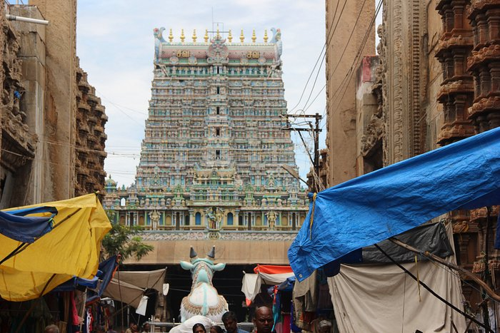
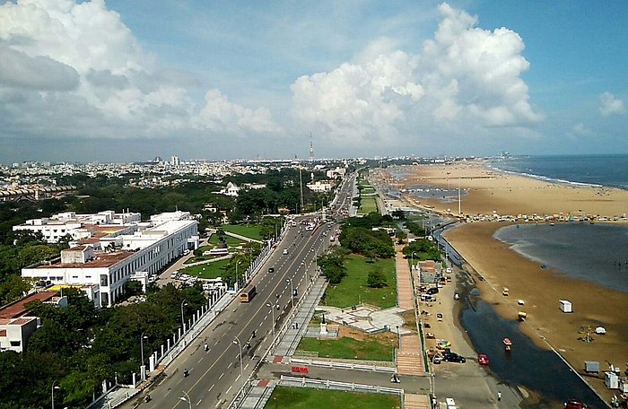

Famous Places
Madurai Meenakshi Amman Temple
Arulmigu Meenakshi Amman Thirukkovil, is a historic Hindu temple located on the southern bank of the Vaigai River in the temple city of Madurai, Tamil Nadu, India. It is dedicated to the goddess Meenakshi, a form of Parvati, her consort, Sundareśvarar, a form of Shiva and her brother Aḻagar, a form of Vishnu. The temple is theologically significant as it represents a confluence of the Shaivism, Shaktism and Vaishnavism denominations of Hinduism. The temple is at the centre of the ancient temple city of Madurai mentioned in the Tamil Sangam literature, with the goddess temple mentioned in 6th-century CE texts.
Adiyogi Shiva

The Adiyogi Shiva bust is a 34-metre tall (112 ft), 45-metre long (147 ft) and 25-metre wide (82 ft) steel bust of Shiva with Thirunamam at Coimbatore, Tamil Nadu. It is recognized by the Guinness World Records as the "Largest Bust Sculpture” in the world. Designed by Sadhguru, the founder and head of the Isha Foundation, the statue weighs around 500 tonnes
Marina Beach
Marina Beach, or simply the Marina, is a natural urban beach in Chennai, Tamil Nadu, India, along the Bay of Bengal. The beach runs from near Fort St. George in the north to Foreshore Estate in the south, a distance of 6.0 km (3.7 mi), making it the second longest urban beach in the world, after Cox's Bazar Beach. It is a prominent landmark in Chennai.